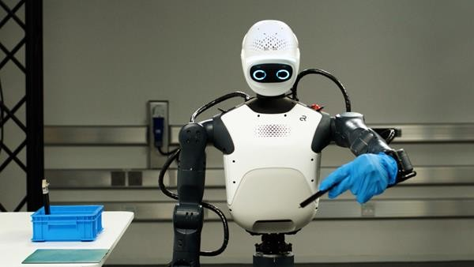

NVIDIA Isaac · 产品 · 机器人平台
Isaac把机器人研发接成完整链路，但参考人形机要等到2027年 2026-10-21T10:20Z · minute precision · main
同一项目的完整分析。研究截止为14:00:02Z；来源核验与图片获取在后，不改变事件日期。
01 工作流与交接 02 实现与边界 03 采用条件与成本 04 控制与恢复 05 验收与替代路径 
NVIDIA发行人配图中的机器人演示；不是本刊现场测试。 ↗ 原始图证 工作流与交接 NVIDIA于10月21日10:20 UTC发布的公告描述了一条机器人研发链，而不是一台已可购买的完整机器人。目标用户是把示范转成可重复实机行为的研究团队与集成商。旧流程常把传感器采集、动作重定向、仿真、策略训练、推理和底层控制分别组装，工程师再处理格式与时序差异。新方案把Isaac Lab、GR00T、Cosmos、参考训练流程与Isaac OS运行时连接起来。真正值得验证的产品假设，是这些原本各自有用的组件能否减少整套实验系统的集成工作；公告的发布时间已确认，现场发布或演示的精确时刻和独立测得的节省工时则未确认。
实现与边界 这次发布包含不同可用阶段。Isaac Lab 3.0宣布正式可用，但Bear Robotics配套技术材料将Isaac OS称为首个公开测试版。三条参考流程分别涉及GR00T 1.7强化学习、灵巧操作训练，以及在DGX Station上使用Cosmos合成数据与后训练。SimReady Central提供超过两千项资产，完整Human1M数据集却仅向Cosmos Coalition伙伴开放。研发负责人需要把每个实验具体映射到所需软件、数据和硬件，不能把整个发布写成统一正式可用或全部无条件开放。
采用条件与成本 Agile ONE SN是拟议中的集成参考人形机器人：Agile ONE S机身、WUJI Hand 2双手、Jetson Thor、传感器与GR00T组合。NVIDIA列出的机身规格为高1.40米、重40公斤、31自由度及每臂3公斤负载；每只手20自由度，带触觉感知和1kHz力控制。这些都是厂商规格，并非本刊测量。产品计划2027年初可用，价格未披露，Halos安全集成仍属计划。主图是NVIDIA提供的机器人实验展示图，呈现实验台前的人形机器人上半身；仅凭图片不能独立确定具体机型，也不能证明系统已经认证或可立即部署。
控制与恢复 具体任务链应从定义可接受行为开始，随后采集或生成示范、配置仿真、训练和评估策略、选择推理与运行配置，最后开展受控实机试验。人仍负责任务边界以及出错后是否继续。来源没有建立完整操作员停止界面、现场安全论证或标准恢复程序。即使训练表现良好，摄像头位置、物体摩擦、手部几何和时序差异仍可能使部署假设失效。因此，买方得到的是一条开发路径，不能把学会某个动作直接理解为能安全迁移到任何工作场所。
验收与替代路径 继续维护既有ROS技术栈、分别组装仿真与运行组件、换用其他研究机器人，或保留遥操作采集，都是合理替代方案。标准化系统可能降低集成差异，同时也带来运行时依赖、算力要求、硬件交期，以及组件变化后的重训和验证成本。最小可证伪实验是在两套独立配置的系统上复现同一限定任务，记录首次稳定实机执行所需工程工时、干预频率、恢复时间，以及更换传感器或物体后的修改量。若模型训练变快，却没有减少集成工作或改善可恢复的任务完成，核心价值仍未成立。“数周缩至数天”只能保留为厂商主张。
← 回到项目，继续翻页